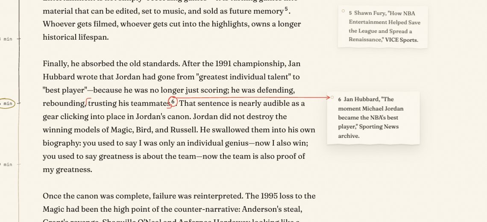
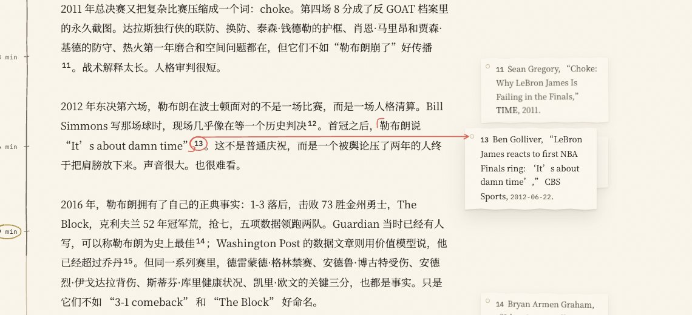
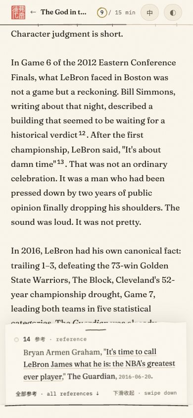
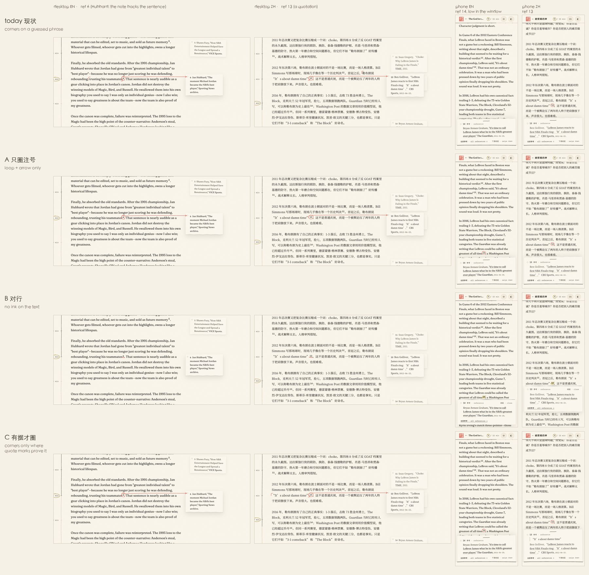

Fred is right, and it isn't a tuning problem. The source never says what a note refers to, so any range the pen draws on the text is a guess. I read all 268 margin notes on the site against the range the pen draws today: it is right for about a third of them. Below: how the range is chosen, the measurements, and three candidates that never claim a range the data can't support. Each one runs on the real Reading page, in both languages.
On the live page, a switch at the bottom-left flips between today and A, B, C. It keeps the essay, the language (the nav's 中 / EN button) and your scroll position. For the phone version, narrow the window to 390 px or use the browser's device toolbar: margin notes show from 1164 px wide, and below that the note opens as a slip.
Today, measured 现状
How the range is chosen
On a desktop, pointing at a ref (or focusing it, or tapping it on a wide touch screen) plays one pen gesture. First, phrase() in lib/reading/notes.js guesses the words the note is about. It walks back from the ref through the paragraph to the previous clause stop (，。；：！？ , ; : ! ?, or a full stop followed by a space). It skips other notes and refs, never crosses a line break, takes at least 16 Latin or 6 CJK characters, and stops at about 70 or 34. Then pen-note.js draws ⌜ at the start of that range and ⌟ at its end, loops the number, and flings an arrow into the margin, where the slip is pulled to the arrow's point. That bracket is the claim Fred is objecting to.
On a phone the slip rises from a slot at the bottom of the window, and the pen loops only the number, with no range. The references list at the end has no link back into the text. The slip's "全部参考 ↓" link jumps to the list entry, which gets highlighted. When a ref is cited a second time (8 marks in the text), that mark has no note and no pen: it is a plain link to the list.

today · 1440 · EN · [6] brackets “trusting his teammates”

today · 1440 · 中 · [13]

today · 390 · EN · [14] hidden behind its sliptoday · 390 · 中 · [13]
268margin notes · 144 EN, 124 ZH · in 13 of 27 essays (4 only in English)
37%right · 99 notes. In English 28%, in Chinese 48%
24%near-miss · 63: holds the target, a few words over or under
40%wrong · 106: misses or mangles what the note is about
Why: notes refer to different kinds of text, and the guess is always a clause
what the note is about
notes
today's range right
the clause just before the ref
91
55 · 60%
a quotation
71
29 · 41%: stops at the first comma inside the quotation
one word, name or title
34
10 · 29%: brackets the whole clause around it
the whole sentence
51
4 · 8%
a passage of several sentences
19
1 · 5%
words after the ref, or in an earlier sentence
2
0
Of the 169 ranges that are not right, 86 are too short (the last clause of a sentence, half a quotation). 46 are cut by the length cap, which chops a name, a number, a word or the subject. 24 are too long (a clause bracketed around one title). 8 mark other words entirely, 4 are two notes on one spot that get one range, and 1 runs back across another ref and its note.
god-in-the-edit [6], both languages · too short The note is Jan Hubbard's “The moment Michael Jordan became the NBA's best player”, which backs the whole sentence. The pen brackets only trusting his teammates (zh 还防守、篮板、信任队友).
god-in-the-edit [18][19], both languages · two notes, one range Horace Grant's note and Pippen's note sit side by side, so both get the Pippen clause. Grant's note points at Pippen was also reported to be unhappy with how he was portrayed.
sacramentos-absent [5] EN and [4] ZH · cut mid-number “At its peak, 5,000 Chinese people lived here.” becomes 000 Chinese people lived here., because the thousands comma counts as a clause stop. In Chinese, “1100公里” becomes 100公里西段线工程….
god-in-the-edit [15] EN, workplace-vultures [1] EN · cut by the cap “a Washington Post data article…” starts at Post data article used a value model…. The Surge AI estimate loses its number: of the employees at such companies were doing meaningless work.
the-stories-we-live-04 [5] EN, the-stories-we-live-02 [2] both · other words The note is the photo book Our Generation, but the bracket is a collection of photographs., with the title left outside. Elsewhere the note is “You Are What You Measure”, but the bracket is the other saying, you can't improve it”.
today · the second [2] (nobody-likes-me): pointed at, nothing happens
Every row, with the range in context and the reason for each verdict: notes-catalogue.html (made by notes-catalogue.mjs and notes-catalogue.py). The phone has its own failure, shown in the candidates' screenshots below: a ref in the lower part of the window ends up behind its own slip, loop and all.
Three candidates 三个方案
All three keep today's slip: the punched eyelet, the seeded tilt, the citation in upright serif, and the spring that pivots on the eyelet. All three keep keyboard focus as the pen's 「 」 and leave no coral at rest. They differ in what the pen is allowed to claim. Each works on today's data, with nothing new to author.
The pen loops the number and flings the arrow, with no ⌜ ⌟. The only fact the data holds is where the ref sits, so that is all the pen marks. On a phone, the slip never hides its own ref.
Today's gesture without the corners: one stroke from the loop to the arrowhead, careful round the number and flung through the leading. The slip is pulled to the point as it lands. The first reveal inks in about 0.35 s and the slip is still by about 1 s. Later reveals are one quick stroke of about 0.2 s.
phone
Today's slip out of the slot, with the loop on the number. If the ref's line would end up under the slip, the page first glides up just enough that the line rests 14 px above the slip's top edge.
pen rules
The loop and arrow are the shipped note gesture, and focus is 「 」. Nothing is drawn on the words.
port
Delete phrase() from notes.js and the ⌜ ⌟ strokes from pen-note.js (about 40 lines out), and add the clearance to slip.js (about 4 lines in). The page ends up with less code than today.
No ink on the text. The ref takes the pen's hover line and its slip comes level with that line. On a phone, the slip is pulled out from under the ref's own line instead of rising from the bottom of the window.
The pen's hover line goes under the number (TierMark tier 1: coral, level, at baseline + max(3 px, 0.18 em)). About 0.2 s later the slip comes level, with its eyelet and number on the line's centre, 26 px clear of the text, on the same spring. There is no loop and no arrow. The slip's own number gets no line, because there it would hang about 5 px over the citation's next line, under the 10 px spacing rule.
phone
The pen cuts a slot along the bottom of the ref's line, and the slip slides down out of it over the lines below. The ref stays in view, banded wheat (chosen) while its note is out. If the slip would run past the bottom of the window, the page glides up just enough, but never pushes the line under the nav. Tapping the ref again, tapping elsewhere, Esc or 收起 pushes the slip back in.
trade-off
It is the quietest of the three. The tie is position plus a small line, and it gives up the flung arrow chosen in round 3. The phone slip becomes a new module (about 120 lines) in place of the slot.
C
Bracket only what punctuation proves 有据才圈
claims: a range only where the author's quote marks show it
只有作者自己写了引号或书名号、注号紧跟其后时，笔才描出 ⌜ ⌟——引号就是证据；其余与 A 相同，只圈注号。手机纸条顶上也只在有据时引出那句原文。
⌜ ⌟ appear only where the author's own quotation or title marks close right before the ref. Everywhere else C behaves like A. On a phone, those slips open with the quotation at the top, the way a scholarly edition repeats the quoted words before each note.
56 of 268 notes (21%) get a bracket. 49 are right, 5 are near-misses (for example, only the second of two quoted terms), and 2 are wrong: in stories-02 [2], the note names the other saying. Today's range gets 28 of those same 56 right.
proof
The closing mark (” " 」 』 》) comes right before the ref, with at most one sentence stop in between. Its opening mark is in the same paragraph and source line. No other ref sits between the marks, and no second closing mark of the same kind comes first, so a stray ” proves nothing (stories-05 ZH [18] has one).
trade-off
A bracket appears on one ref and not the next, which may read as inconsistency. It costs A plus a matcher of about 45 lines (notes-proven.js).
Side by side 对照

Recommendation 建议
A. It removes the bug at its root: the data says only where a ref sits, and A marks only that. It keeps the gesture Fred picked in round 3 (the loop, the flung arrow, and the slip pulled to the point by its eyelet), so the page keeps its character and only the false claim goes. It is also the smallest port, leaving less code than today. The phone fix, where the slip never hides its ref, is independent and would ship with any choice. B's slip-from-the-line also works with A's or C's desktop.
If brackets come back, they should be exact: a span Fred marks in the Markdown (for example {the quoted words}[3]), drawn only where marked. C is the middle ground if he wants some brackets now. Whichever wins, the 8 repeated refs should get the same tie as their first mention (not built here).
Questions only Fred can answer 需要 Fred 定的
Should the pen ever mark words? If yes, only where certain: where quote marks prove it (C, 21% of notes) now, or spans you mark later.
Phone: keep the slip rising from the bottom of the window (A, C, now never hiding the ref), or pull it out from under the ref's own line (B)?
Would you mark spans in the Markdown for the notes where it matters? Every candidate works without it.
Should the references list link back to each ref in the text (↩)? Today it doesn't.